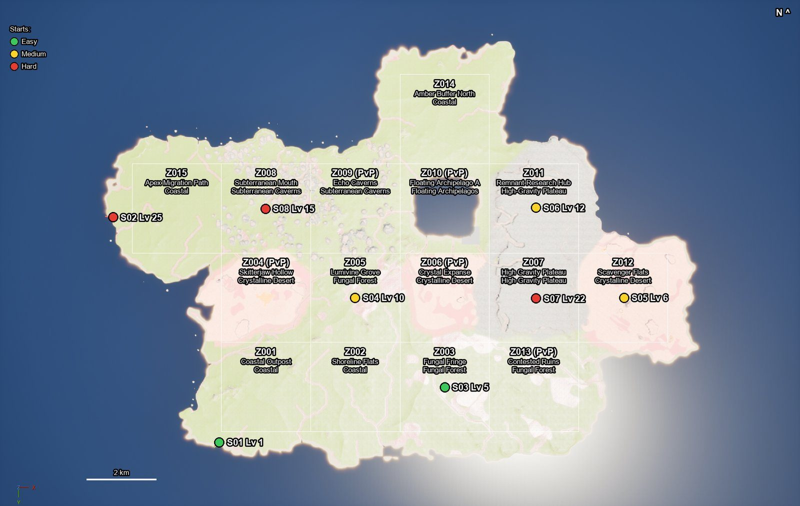
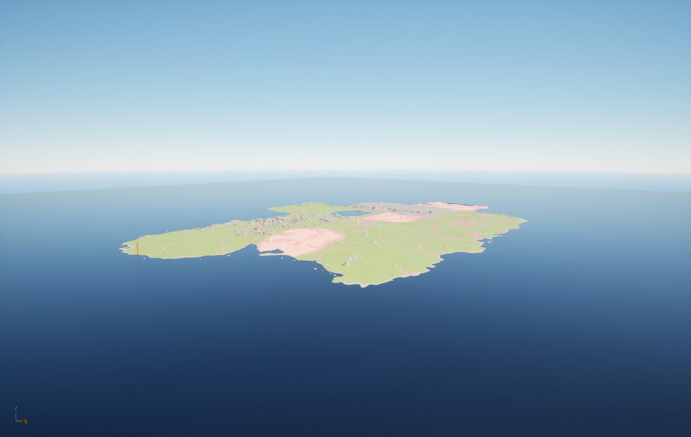
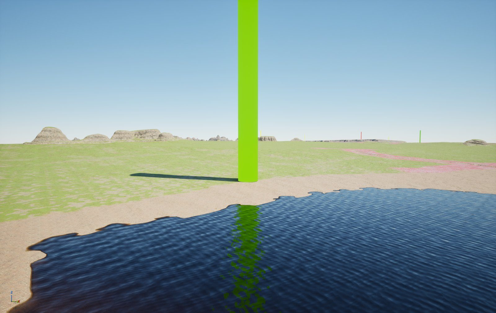
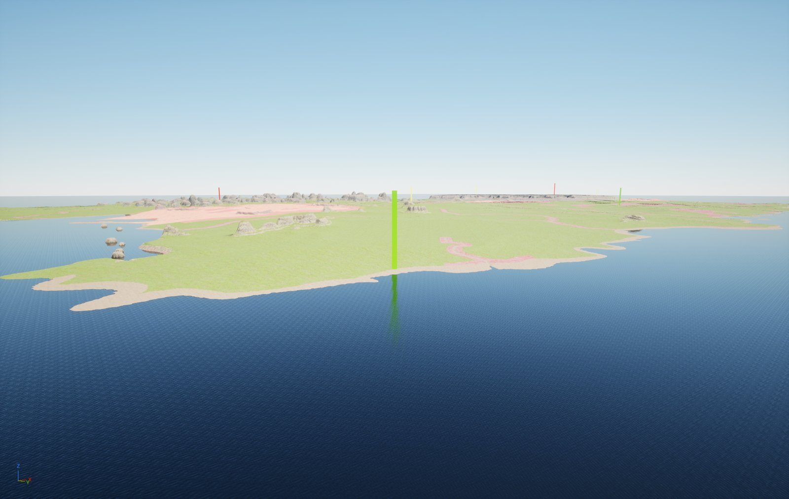
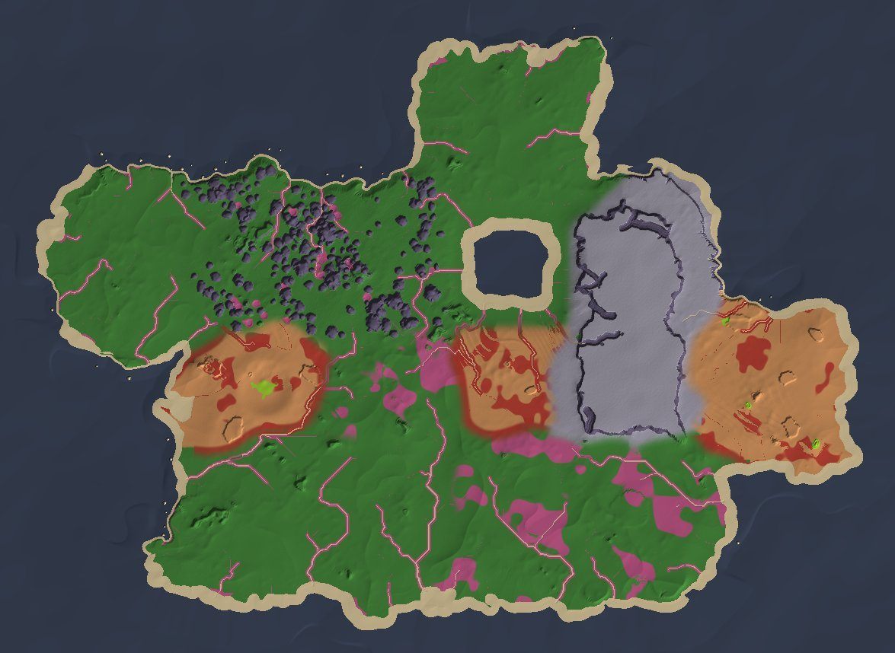
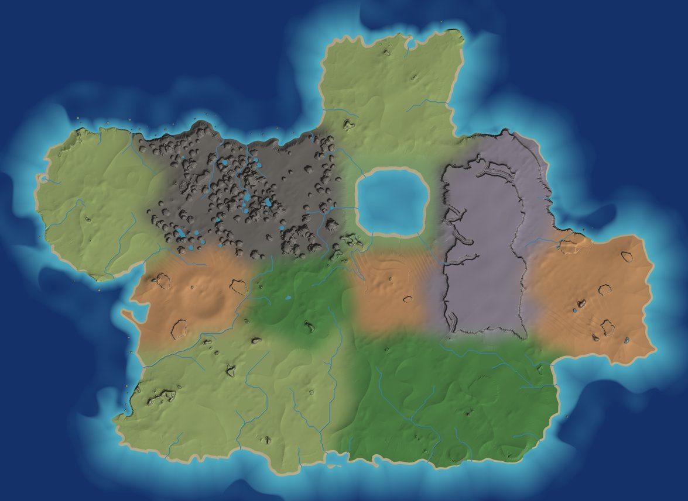

Tharrn Wiki · Map build
Map build
Building the 100 km² main map to AAA quality, region by region.
Doing The owner asked for the whole main map and its biomes to reach "AAA" quality, with
harvesting built in: trees cut down, rocks mined, sticks and stones picked up, plants harvested for fibre and food.
This tab follows that work step by step; the full plan is the design record's docs/map-design.md.
Pictures












Steps
| Step | What | State |
|---|---|---|
| M1 | Plan and research | In the build 2026-10-17 (this page) |
| M2 | Terrain tool v2 (Tools/World/island_terrain.py) | In the build 2026-10-19: the island at 2 m (9,399 x 6,859 points), each region's landforms, raindrop and slope erosion, 48 rivers, streams and dry beds, 16 lakes and pools, the bundle's layers painted crisp (97 % of points one layer); refined again as the dressing shows |
| M3 | The main map level L_Main | built 2026-10-19 with the 2 m landscape, the sky, the sea (the bundle's water on a plane: Unreal's ocean draws nothing on this map, gotcha 106) and the 8 starting locations; rivers and lakes next |
| M4 | Dressing with the bundle's biome presets | Designed |
| M5 | Harvesting | Designed |
| M6 | Places (crash sites, hubs, ruins, paths) | Designed |
| M7 | Look (per-region fog and light, sound) | Designed |
| M8 | Budget and checks | Designed |
How it is made
- Terrain: Tharrn's terrain tool shapes each region on the layout's coast (dunes, sea cliffs and stacks; forest ridges; desert dunes, buttes and a crater; the mesa with canyons; karst towers and sinkholes; the lagoon), then erodes it with millions of simulated raindrops, finds rivers and lakes from where the water flows, and paints the ground with the Sci-Fi bundle's layers.
- Landscape: 2 m between points over 18.8 × 13.7 km (37 × 27 landscape components, under Epic's 1,024 limit), the bundle's landscape material with its virtual textures.
- Dressing: the bundle's biome presets read the paint: each spawns its trees, plants and rocks where its layer is painted, and its rock sets turn steep ground into cliffs and spires.